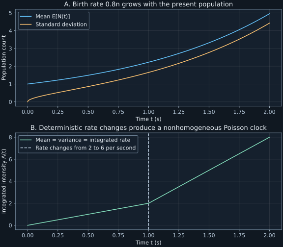

Chapter 7 · Lecture 9
Lattice transport and state-dependent birth and death
A count accelerates as time passes. One explanation is a programmed event rate that rises at a known clock time. Another is reproduction: the more particles already present, the faster new particles arrive. These mechanisms can give similar increasing means but different fluctuations and conditional predictions. The task is to locate the dependence in the generator: on absolute time, on the present state, or on both.
Lecture9 continues lattice cumulants and spatial spreading, then develops general one-step birth and death, deterministic time-dependent Poisson intensity, and closed low-order moments for linear rates. The full caption track was read. Its final moment identities are derived explicitly here, with boundary and existence hypotheses retained; synthetic examples test time dependence against state dependence.
7.1 Odd cumulants retain drift; even cumulants retain traffic L9 4:09
Let $N_+(t),N_-(t)$ be independent homogeneous Poisson processes with rates $r_+,r_-\geq0$, and let $\ell\gt0$ be the lattice spacing. Start at the origin and define $X(t)=\ell[N_+(t)-N_-(t)]$. Its cumulant-generating function in inverse-length variable $u$ is $\mathcal K(u,t)=t[r_+(e^{u\ell}-1)+r_-(e^{-u\ell}-1)]$, finite for every real $u$.
Differentiate the two exponential terms $k$ times at $u=0$. Each derivative gives $\ell$ on the positive stream and $-\ell$ on the negative stream. The constant terms disappear. This proves (7.1), with units length to the power $k$. The first two cumulants identify mean and variance as in chapter6. ∎
The mean-square displacement is $\mathbb E[X(t)^2]=2Dt+v^2t^2$. Calling this entirely diffusive would conflate fluctuations about the drift with the systematic motion. Odd cumulants reverse sign on interchanging the rates, while even cumulants are unchanged. At fixed total traffic $r_++r_-$, bias changes the mean but not the variance for this Poisson-clock model.
For $r_+=3,r_-=1$ per second, $\ell=0.5$ meter, and $t=2$ seconds, the first four cumulants are $2,2,0.5,0.5$ in their respective powers of meters. The fourth central moment is $\kappa_4+3\kappa_2^2=12.5$ in fourth-power units, so the fourth cumulant must not be mistaken for the fourth moment. The lab independently checks these values by summing exact Skellam masses.
7.2 A vanishing fixed-site probability need not lose total mass L9 8:43
Assume both rates are positive and write $p_j(t)=\Pr(X(t)=\ell j)$. The exact mass is $e^{-(r_++r_-)t}(r_+/r_-)^{j/2}I_{|j|}(2t\sqrt{r_+r_-})$. For fixed order $j$ and positive argument $z\to\infty$, the cited asymptotic $I_j(z)\sim e^z/\sqrt{2\pi z}$ is DLMF10.40.1. Substitution yields
$$p_j(t)\sim\frac{(r_+/r_-)^{j/2}\exp[-t(\sqrt{r_+}-\sqrt{r_-})^2]}{\sqrt{4\pi t\sqrt{r_+r_-}}}.\tag{7.2}$$At a fixed site, nonzero bias produces exponential decay multiplied by $t^{-1/2}$; equal rates leave the $t^{-1/2}$ decay alone. This is a fixed-site long-time statement, not a uniform approximation around a mean that moves linearly with $t$. Interchanging these regimes would turn an asymptotic formula into an unjustified far-tail estimate.
The total probability remains one at every finite time. The mass spreads over an increasing collection of sites, so taking the limit at each site and then summing exchanges two operations that are not justified here. The limiting zero sequence is not a stationary probability. In fact no normalized stationary law exists for this homogeneous walk on the entire integer line. Suppose such a law $\pi$ existed. Translation invariance would give $\pi_j=\sum_{i\in\mathbb Z}\pi_i p_{j-i}(t)$ for each fixed site $j$ and every $t$. For each fixed $i$, the transition mass $p_{j-i}(t)$ tends to zero by (7.2), and it is bounded by one. Dominated convergence with the summable weights $\pi_i$ therefore makes the right side tend to zero. Thus every $\pi_j$ would be zero, contradicting normalization.
Unbounded state space by itself does not prohibit stationarity. State-dependent rates can confine a process even on all integers. The argument here concerns this homogeneous translating walk. A restoring-rate counterexample is developed in Exercise7.2, preventing the support geometry from being mistaken for a general nonexistence theorem.
7.3 Independent marked clocks produce a coordinate product L9 13:17
On a $d$-dimensional rectangular lattice, assign independent positive and negative Poisson streams of rates $r_{a,+},r_{a,-}$ to coordinate $a$, for $a=1,\ldots,d$. Let spacing in that coordinate be $\ell_a$. Each coordinate displacement is $X_a(t)=\ell_a[N_{a,+}(t)-N_{a,-}(t)]$. Independence gives the joint characteristic function
$$\phi(\mathbf k,t)=\prod_{a=1}^{d}\exp\{t[r_{a,+}(e^{ik_a\ell_a}-1)+r_{a,-}(e^{-ik_a\ell_a}-1)]\}.\tag{7.3}$$The coordinate laws therefore factorize and their cross-covariances vanish. This is justified by independent event marking, not by the existence of Cartesian axes. At a fixed total number of jumps, counts in different coordinate directions are multinomial and constrained by that total; conditioning destroys this simple independent-coordinate construction.
For equal rates $\lambda/(2d)$ in each of $2d$ directions, (7.2) gives fixed-site decay proportional to $t^{-d/2}$, since there are $d$ independent inverse-square-root factors. This anticipates the role of dimension in recurrence. It does not yet determine first-return probabilities, because occupancy at a time and first return at that time are distinct events.
7.4 One-step population equations require the correct boundary L9 22:10
Let $N(t)$ now denote a nonnegative integer population, unrelated to a homogeneous Poisson count unless its rates specify that case. From state $n$, a birth increases the population to $n+1$ at rate $\lambda_n\geq0$, and a death decreases it to $n-1$ at rate $\delta_n\geq0$. Set $\delta_0=0$ to prevent negative populations. Rates are functions of population, with inverse-time units; they need not sum to one.
Over a short interval $h$, probability enters state $n$ from $n-1$ with first-order coefficient $\lambda_{n-1}p_{n-1}$ and from $n+1$ with coefficient $\delta_{n+1}p_{n+1}$. It leaves through both exits with coefficient $(\lambda_n+\delta_n)p_n$. Subtract $p_n(t)$ and divide by $h$. At zero only the first surviving incoming neighbor and the birth exit remain, giving the separate boundary equation. Summing through a finite cutoff $M$ cancels every interior flux and gives $d\sum_{n=0}^{M}p_n/dt=\delta_{M+1}p_{M+1}-\lambda_Mp_M$. When the boundary flux at infinity vanishes for the nonexplosive law, total mass is conserved. ∎
The nonexplosion condition means finitely many jumps occur in each finite time interval almost surely. It cannot be replaced by formal cancellation of infinitely many terms. A pure birth model whose rates grow too quickly may make infinitely many jumps in a finite random time; its minimal finite-state probability can then lose mass to infinity. A finite numerical truncation that reflects at its top boundary silently defines another process.
Constant births with zero deaths recover a Poisson count. Linear births $\lambda_n=bn$ with $b\gt0$, zero deaths, and initial population one model independent reproduction. Its mean grows exponentially rather than linearly; the rate increases because the population changed, without any explicit clock dependence. This distinction is central to the running inference problem.
7.5 A prescribed time-dependent intensity still gives Poisson increments L9 35:07
Let $\lambda(t)\geq0$ be a deterministic locally integrable rate, and define cumulative intensity $\Lambda(t)=\int_0^t\lambda(s)ds$. A nonhomogeneous Poisson process has independent increments with count over $[s,t]$ Poisson of mean $\Lambda(t)-\Lambda(s)$. Unlike a population-dependent birth process, its conditional future rate is specified by the clock, independent of how many events have already occurred.
The pure-birth equations use the same rate $\lambda(t)$ in every state. Their generating-function equation is $\partial_tG=\lambda(t)(z-1)G$ with $G(z,0)=1$. Integrating its scalar coefficient gives the stated expression, and expansion gives Poisson masses with mean $\Lambda(t)$. A constructive version sets $N(t)=M(\Lambda(t))$, where $M$ is a unit-rate homogeneous Poisson process. Deterministic disjoint clock intervals map to disjoint cumulative-intensity intervals, so increment independence is preserved. ∎
For rate two per second before one second and six per second afterward, $\Lambda(1)=2$ and $\Lambda(2)=8$. The slope changes, while count variance continues to equal the mean. Replacing a random intensity by its expectation is not the same operation. If an integrated intensity $A\geq0$ has finite first and second moments and the count conditional on it is Poisson, then $\mathbb E[N\mid A]=\operatorname{Var}(N\mid A)=A$. Total variance therefore gives $\operatorname{Var}(N)=\mathbb E[A]+\operatorname{Var}(A)$. Fluctuating environments introduce excess variance and can correlate increments.
7.6 A generator can close moments before the full law is solved L9 43:06
For a function $f$ of population, the backward generator acts as $(Lf)(n)=\lambda_n[f(n+1)-f(n)]+\delta_n[f(n-1)-f(n)]$, with the death term omitted at zero. Multiplying (7.4) by $f(n)$, summing, and shifting the incoming indices gives $d\mathbb E[f(N)]/dt=\mathbb E[(Lf)(N)]$ whenever moments, boundary terms, and the interchange are justified.
For $f(n)=n$ and $f(n)=n^2$, the increments are respectively $\pm1$ and $2n+1,-2n+1$. Hence
$$\frac{d\mathbb E[N]}{dt}=\mathbb E[\lambda_N-\delta_N],\qquad \frac{d\mathbb E[N^2]}{dt}=\mathbb E[(2N+1)\lambda_N+(-2N+1)\delta_N].\tag{7.5}$$These identities do not assume linear rates. Affine rates make the first equation depend only on the mean and the second on at most the first two moments. A quadratic rate generally introduces the next moment and breaks that closure. Linearity here refers to dependence on population, since the probability master equation is already linear in the probabilities.
For the pure reproduction model $\lambda_n=bn$, initial $N(0)=1$, equation (7.5) gives $m'=bm$ and $s_2'=2bs_2+bm$, where $m=\mathbb E[N]$ and $s_2=\mathbb E[N^2]$. Solving yields $m=e^{bt}$ and $\operatorname{Var}(N)=e^{bt}(e^{bt}-1)$. The variance grows faster than the mean; a programmed deterministic Poisson rate chosen to match $m-1$ would not reproduce those fluctuations. The full reproduction law is derived in Exercise7.3.
Nonexplosion in this linear-birth example can be checked before using infinite-state moments. Stop the population when it first reaches a finite level $M$. Its finite-state mean satisfies $m_M'\leq bm_M$, so $m_M(t)\leq e^{bt}$. The probability of having reached $M$ by time $t$ is at most $m_M(t)/M\leq e^{bt}/M$, because the stopped population then remains at $M$. Letting $M\to\infty$ makes finite-time explosion probability zero. The normalized exact law in Exercise7.3 then verifies the finite moments used above.
7.7 Laboratory: distinguish clock acceleration from population feedback
Run python code/ch07_populations.py. The program generates 40,000 event-driven pure-birth populations with $b=0.8$ per second at $t=1.5$ seconds, starting at one. It samples each waiting time with the current rate $bn$, changes the population, and repeats until the observation time. A separate unit-exponential clock simulates a nonhomogeneous Poisson process up to cumulative intensity eight. Outputs are JSON and text beside the program, with seed202611087 and no network access.
Yule mean: exact=3.320116923, sample=3.320250000 Yule variance: exact=7.703059458, sample=7.713489938 NHPP at t=2: exact mean=variance=8, sample mean=7.976950, variance=7.914869 Walk cumulants: 2.000000, 2.000000, 0.500000, 0.500000
The reproduction process is often called the Yule pure-birth process. Its exact geometric masses independently check the event-driven implementation and moments. The nonhomogeneous Poisson check operates in cumulative-intensity time, where independent unit exponential waits become valid; transforming those times back supplies physical event times. The finite simulation discrepancies are sampling error, while the exact moment identities are model predictions. Assertions compare sample means with six analytical standard errors and check exact mass moments separately.

This exact moment calculation accepts a nonnegative time and positive birth-rate coefficient and writes no files:
import numpy as np
def reproduction_moments(birth_rate, time):
if birth_rate <= 0 or time < 0:
raise ValueError("positive rate and nonnegative time required")
mean = np.exp(birth_rate*time)
return mean, mean*np.expm1(birth_rate*time)
mean, variance = reproduction_moments(0.8, 1.5)
print(f"mean={mean:.9f}, variance={variance:.9f}")mean=3.320116923, variance=7.703059458
The formula presumes one initial ancestor and independent per-capita reproduction. It does not model a carrying capacity or resource depletion. Large $bt$ can overflow finite floating-point arithmetic even though the finite-time mathematical moments exist. An implementation intended for that regime should retain logarithmic values or use arbitrary precision.
7.8 The boundary and clock are part of the model
The transport cumulants distinguish drift from traffic, while the population generator identifies which present-state transitions are possible. A nonhomogeneous Poisson process changes a deterministic clock without changing its conditional count mechanism. Linear population feedback instead couples the event rate to the realized state and can produce overdispersion.
Nearest-neighbor structure alone does not imply independence of successive increments. A state-dependent process may be Markov while its increments are dependent. A two-sided unbounded lattice can support a stationary law with restoring rates, and a half-line can fail to support one if outward births dominate. Normalization, boundary flux, and nonexplosion must be checked for the particular rates. Chapter8 performs those checks and solves equilibrium population examples.
7.9 Exercises with worked solutions
Exercise7.1 — Equal means do not identify the clock (conceptual)
A pure reproduction population starts at one. A second model is one plus a nonhomogeneous Poisson count with cumulative intensity $e^{bt}-1$. Compare their means, variances, and conditional future rates.
Worked solution
Both means are $e^{bt}$. Reproduction variance is $e^{bt}(e^{bt}-1)$, while shifted Poisson variance is $e^{bt}-1$. In the first model the next-event rate is $bN(t)$, depending on the realized population. In the second it is the deterministic derivative $be^{bt}$, independent of the realized count. Their ensemble-average rates agree, but their conditional predictions and fluctuations differ. A mean trajectory alone discards the information needed to distinguish feedback from clock programming.
Exercise7.2 — Stationarity on the full integer line (conceptual)
On all integers $j$, take upward rate $\lambda_j=e^{-j-1/2}$ and downward rate $\delta_j=e^{j-1/2}$ in common inverse-time units. Show that weights $\pi_j\propto e^{-j^2}$ satisfy detailed balance and normalize. What additional process issue must still be checked?
Worked solution
The neighbor ratio is $\lambda_j/\delta_{j+1}=e^{-2j-1}=e^{-[(j+1)^2-j^2]}$, exactly $\pi_{j+1}/\pi_j$. Thus every pairwise current vanishes. The sum of $e^{-j^2}$ over all integers is finite, by comparison with a decaying geometric tail outside a finite interval, so the weights normalize. This disproves any blanket claim that an unbounded two-sided state space forbids stationary weights. One must additionally establish a nonexplosive process for which these balance equations define an invariant probability; the formal weight calculation alone is not that existence proof. Rates point strongly toward the origin, but that observation must be made into an appropriate existence argument before claiming a full stationary process.
Exercise7.3 — Derive the reproduction law (derive)
Verify that $p_n(t)=a(1-a)^{n-1}$ for $n\geq1$, with $a=e^{-bt}$, solves the pure-birth equations $\lambda_n=bn$, starting at one. Recover its first two moments.
Worked solution
At $n=1$, $\dot p_1=-ba=-bp_1$. For $n\geq2$, differentiation with $\dot a=-ba$ gives $\dot p_n=-ba(1-a)^{n-1}+ba^2(n-1)(1-a)^{n-2}$. Factoring $ba(1-a)^{n-2}$ leaves $(n-1)a-(1-a)=na-1$. The gain-loss expression $b(n-1)p_{n-1}-bnp_n$ has the same factor and bracket. At zero time all mass is at one; the geometric series normalizes for positive time, with its endpoint interpreted by continuity.
This is the geometric law on positive integers with success parameter $a$. Its mean is $1/a=e^{bt}$ and variance $(1-a)/a^2=e^{bt}(e^{bt}-1)$. These moments also solve (7.5), providing an independent check. The harmonic waiting-time sum for rates $bn$ does not accumulate infinitely many jumps at finite time; in contrast, faster-growing birth rates can require a separate explosion analysis.
Exercise7.4 — Mixed intensities add noise (derive)
Choose a random rate $R$ once per experiment, equal to one or three per second with equal probability. Given $R$, arrivals form a homogeneous Poisson process. Find the unconditional mean and variance of the count over two seconds, and covariance of counts in two disjoint one-second intervals.
Worked solution
The conditional two-second mean and variance are both $2R$. Since $\mathbb E[R]=2$ and $\operatorname{Var}(R)=1$, total expectation gives mean four, while total variance gives $\mathbb E[2R]+\operatorname{Var}(2R)=4+4=8$. For two disjoint one-second intervals, conditional independence makes conditional covariance zero. Their conditional means are both $R$, so unconditional covariance is $\operatorname{Var}(R)=1$. Replacing the random rate by its mean would falsely predict count variance four and zero cross-interval covariance.
Exercise7.5 — Invert the programmed clock (compute/design)
For rate two before time one and six afterward, give the inverse cumulative-intensity map for cumulative time $u\in[0,8]$. Explain how to generate physical arrival times without using a fixed time grid.
Worked solution
For $0\leq u\leq2$, physical time is $t=u/2$. For $2\lt u\leq8$, it is $t=1+(u-2)/6$. Generate successive independent unit exponential waits in $u$-time, accumulate them, retain sums no greater than eight, and apply this piecewise inverse to each sum. The resulting physical times have the intended nonhomogeneous Poisson law. Counts in the first and second one-second intervals have independent means two and six. A simulation using a single exponential rate of four per second would match the total mean eight but distribute events incorrectly between intervals.
Exercise7.6 — Close a moment equation and state its limit (compute/design)
For immigration-death rates $\lambda_n=a$ and $\delta_n=bn$, with $a,b\gt0$, derive the mean equation. If the birth rate instead becomes $a+cn^2$, identify the new quantity needed and explain why replacing it by the squared mean is an approximation.
Worked solution
Equation(7.5) gives $m'=a-bm$ in the affine model. With mean initial value $m_0$, the solution is $m(t)=a/b+(m_0-a/b)e^{-bt}$, tending to $a/b$. For quadratic birth it becomes $m'=a+c\mathbb E[N^2]-bm$. Since $\mathbb E[N^2]=m^2+\operatorname{Var}(N)$, replacing it by $m^2$ discards $c\operatorname{Var}(N)$. No identity makes that variance vanish in a fluctuating population. One needs either another moment equation, a justified closure regime, or the full distribution. Rapidly growing birth rates can additionally raise explosion questions, so formal moment closure does not guarantee process existence.
7.10 Sources and attribution
- V. Balakrishnan, lecture9, IIT Madras, NPTEL115106089, and official instructor notes, PDF64–67: lattice spreading and one-step population framework. Nonhomogeneous intensity and moment equations follow the recording's discussion and are derived here.
- NIST DLMF10.40.1: modified-Bessel asymptotic at fixed order and large positive argument, used with its stated regime in (7.2).
The Yule and programmed-clock comparison, explicit moment derivations, code, and exercises are teaching additions. No stationary-law nonexistence is inferred from unbounded support alone. A Markov state dependence does not imply independent increments. Raw lecture sources remain private.